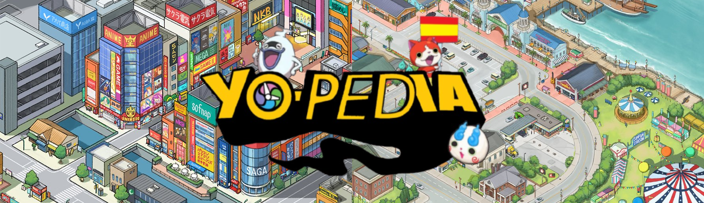
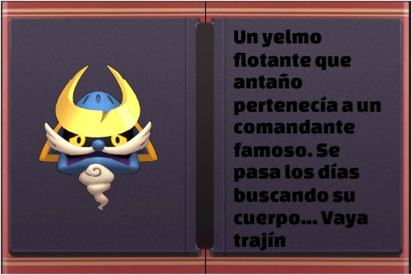
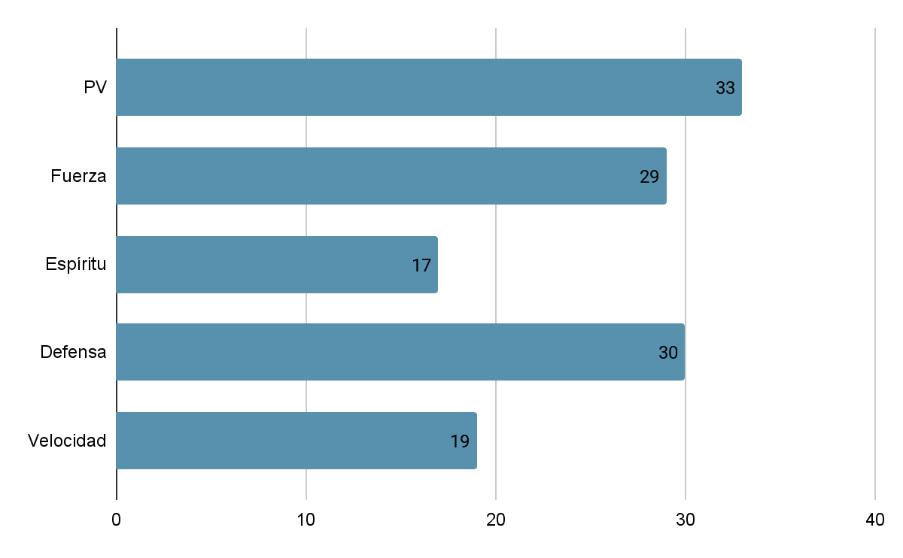
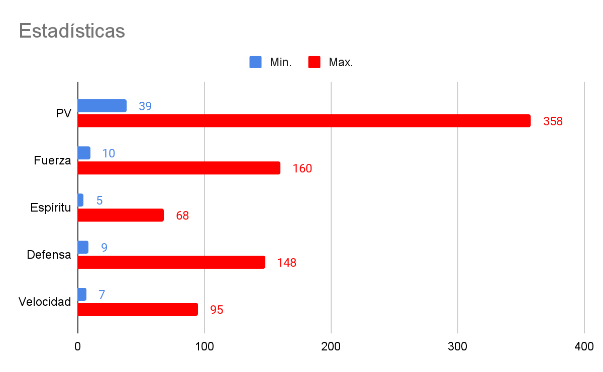
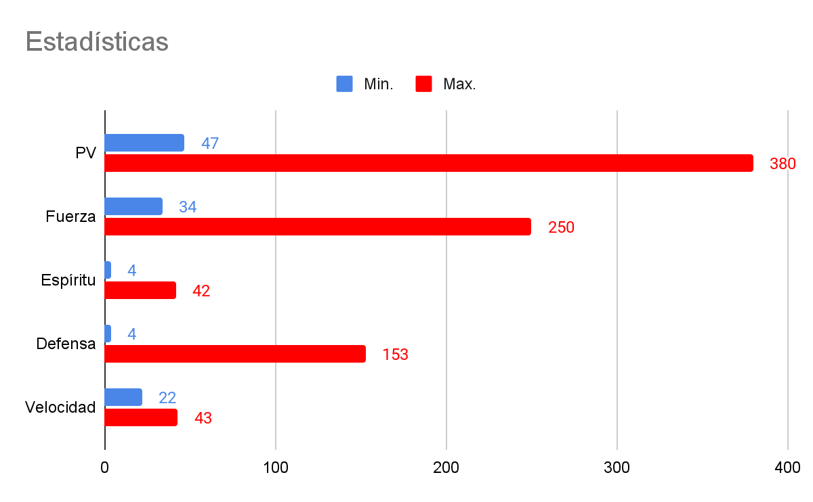
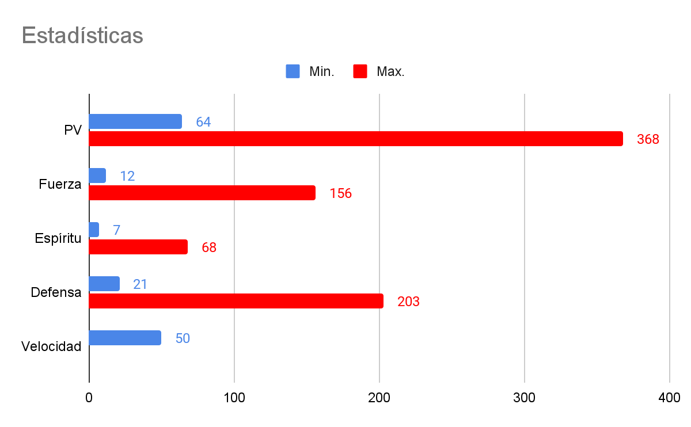
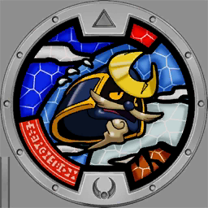
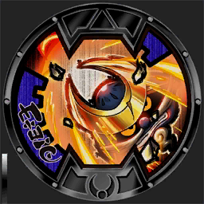
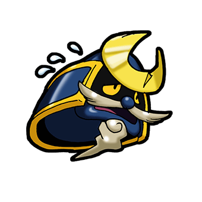

Yelmandante
Yelmandante (Helmsman en inglés; カブトさん Kabuto-san en japonés) es un Yo-kai de Rango D, elemento rayo perteneciente a la tribu valiente introducido en Yo-kai Watch .
Etimología
Su nombre procede de las palabras españolas yelmo y andante/comandante.
Su nombre en inglés, Helmsman, proviene de las palabras inglesas helmet (casco) y man (hombre).
Su nombre en japonés, Kabuto-san, proviene de la palabra 兜 kabuto (casco samurái) y el sufijo honorífico japonés -san (que es el equivalente japonés de señor).
Su nombre en francés, Heaumer, proviene de las palabras francesas heaume (yelmo) y haubert (malla de metal). Proviene de estas palabras por la unión de un yelmo (yelmandante) y una armadura (lorigón).
Su nombre alemán, Helmchen, proviene de la palabra alemana helm (casco) y el diminutivo -chen.
Su nombre en italiano, Adelmo, proviene del nombre italiano Adamo (Adam) y elmo (casco).
Descripción
Yelmandante es una cabeza flotante con un casco azul oscuro decorado con cuernos dorados, algo desgastados. Sus ojos son grandes y amarillos, con pupilas negras. Tiene un bigote grueso de color gris claro que cuelga a los lados de su boca. Debajo de su barbilla, hay una nube o humo enroscado, simulando una perilla.
Origen
Yelmandante está basado en un kabuto, el casco tradicional de la armadura japonesa, y fue empleado por primera vez por los guerreros medievales japoneses, que evolucionaron hasta los samuráis.
Evolución y Fusión
Yelmandante evoluciona a Juntollero al ser fusionado con Lorigón.
Otros datos
Almagia
En Yo-kai Watch 2
Alma Yelmandante | FUE+3+(2xNivel)
|
En Yo-kai Watch 3
Alma Yelmandante | Aumenta la DEF al estar en el recuadro central. |
En Yo-kai Watch Blasters
Alma Yelmocoraza | Animámetro sube un poco si te proteges de ataques. |
Descripción de Medallium

Localización
Yelmandante se encuentra en:
Círculos Yo-kai
En Yo-kai Watch Blasters, Yelmandante es un Yo-kai necesario para completar el Círculo Yo-kai
Lost in translation, cuya recompensa es Tricotom.
Lost in translation
Destrezas
En Yo-kai Watch
Ataque  Cabezazo Cabezazo
55 | Técnica Chispa
20 |
|
Animáximum  Yelmocoraza Yelmocoraza
- - - Da una orden que aumenta la moral y la DEF de los aliados. | Espiritación  Yelmodefensa Yelmodefensa
Aumenta la DEF de un aliado…¡como si este llevase un casco! |
|
En Yo-kai Watch 2
Ataque Cabezazo
55 | Técnica Chispa
20 |
|
Animáximum Yelmocoraza
- - - Da una orden que aumenta la moral y la DEF de los aliados. | Espiritación Yelmodefensa
Aumenta la DEF de un aliado…¡como si este llevase un casco! |
|
En el modo Blasters de Yo-kai Watch 2
A Ataque | Rol:
FUE:
ESP:
VEL: |
X Guardia
Pulsa X para defenderte |
En Yo-kai Watch 3
Ataque Cabezazo
50 | Técnica Chispa
30 |
|
Animáximum Yelmocoraza
- - -  Ordena a todos los aliados que se animen, lo que aumenta mucho su DEF. | Espiritación Yelmodefensa
- - - Aumenta la DEF de un aliado…¡como si este llevase un casco! |
|
-En Blasters T
Técnica X Descorazamiento
80 Baja brevemente la DEF del rival. | Animáximum Yelmocoraza
- - - Sube mucho la DEF y atrae la atención del rival. |
|
Técnica Y Guardia
- - - Baja el daño recibido. Atrae la atención del rival. | Ataque Ataque
50 Ataca a un rival cercano |
|
En Yo-kai Watch Blasters
Ataque Ataque
50 Golpea a enemigos cercanos | Animáximum Yelmocoraza
- - - Aumenta la defensa y el enemigo se centra en ti. |
Posibles técnicas:
Posible técnica 1 Ataque potente
100 Ataque con espíritu de lucha adicional. | Posible técnica 2 Guardia
- - - Reduce el daño recibido. Atrae la atención. |
Posible técnica 3 Descorazamiento
80 El objetivo pierde poder de defensa por un tiempo. | Posible técnica 4 ¡Adelante!
80 Ataca a un enemigo para atraer su atención. |
Estadísticas
En Yo-kai Watch

En Yo-kai Watch 2

En Yo-kai Watch 3

En Blasters T: PV: VEL: Lento
En Yo-kai Watch Blasters

Para el cálculo de la velocidad: 50=Lento, 75=Normal, 100=Rápido
Debilidades y resistencias
En Yo-kai Watch y Yo-kai Watch 2
Multiplicadores de elementos |
Fuego
| Hielo
| Tierra
| Rayo
| Agua
| Viento
|
x1 | x1 | x1,3 | x0,7 | x1 | x1 |
En Yo-kai Watch 3 y Yo-kai Watch Blasters
Resistencia | Debilidad |
Rayo
| Tierra
|
Iconos y sprites
Iconos
Medalla Yo-kai
Medalla Normal |
 |
Medalla B |
 |
Citas
Al recibir comida (YW):
“Se puede comer.”
Al recibir comida:
“Algo soso…”
Al recibir su comida favorita (YW):
“¡Increíble!”
Al recibir su comida favorita:
“¡Genial!”
Al recibir su comida odiada (YW):
“Ay…”
Al recibir su comida odiada:
“Ni en pintura.”
Al vaguear:
“Mente fría…”
Al hacerse tu amigo (YW):
“¡Por fin encuentro alguien en quien confiar! ¿Nos hacemos amigos?”
Al hacerse tu amigo (YW2):
“¡Vaya fuerza que te gastas! Quizá deje que te encargues de mis asuntos…”
Al hacerse tu amigo (YW3):
“¡Qué vigor! ¿Me ayudas a reunirme con Lorigón?”
Al hacerse tu amigo (YWB):
“Vaya, qué duro eres. Te debo una.”
En el Cuartel Blasters:
“Hace mucho, Lorigón y yo íbamos siempre adelantados”
“¿Adónde vamos? ¡Pero si nadie quiere ir!”
“Qué pena… Sin Lorigón aquí, ¡parece que ando perdido!”
En el Campamento Blasters:
“¡Oh, qué glorioso sería reunirme con Lorigón!”
Motes aleatorios
-Armaduro
-Capito
-D. Nadie
-Mostacho
En el anime
Yelmandante no aparece en el anime de Yo-kai Watch.
En el manga
Yelmandante aparece en el tomo 11 de Yo-kai Watch, en el capítulo 103.
Galería
 |
Artwork de su medalla Yo-kai |
Curiosidades
-Su etimología proviene de las palabras yelmo y andante. Irónicamente, yelmandante no tiene piernas y por lo tanto no puede andar.
-Es uno de los pocos Yo-kai cuya alma no se llama por su nombre, sino por el de su animáximum. Es el mismo caso con Machimío.